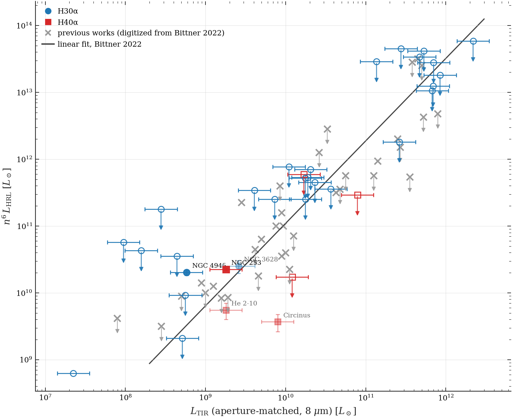

Current results (2026-08-28)
Current results — snapshot 2026-08-28
All numbers below come from the frozen measurement procedure described
in Survey pipeline, quoted on the thesis convention: every σ and
S/N carries the global calibration factor 1.5 (measured on the
survey's own signal-free sources, pipeline Step 4), and the detection
tiers are cut on that calibrated scale. The underlying tables are
result_v2/_uniform_batch/master_table.{csv,md} and
result_v2/survey_registry.csv in the master repository.
Thesis status: the draft was trimmed and restructured on 2026-08-27 (96 pages, main text lean, parameter details moved to an appendix); it compiles clean and passed three full-panel review rounds plus a blind old-vs-new comparison gate before the new version was adopted.
Sample status
| status | count |
|---|---|
| measured — detected (S/N ≥ 5) | 2 |
| measured — marginal (3–5) | 3 |
| measured — upper limit (< 3) | 33 |
| under review (width unmeasurable) | 1 (NGC 5128) |
| mosaic-class disks (excluded by rule) | 4 |
| excluded by decision | 4 |
| candidates with usable archival data, queued | 95 |
An earlier snapshot of this page (2026-08-08) reported 5 detections and 1 marginal — those were the same measurements on the uncalibrated scale. Nothing about the fluxes changed; the uncertainty calibration moved the tier boundaries.
The bright end of the diagram
| galaxy | tier | line | F [Jy km/s] | S/N | width [km/s] | aperture [beams] | noise per 10 km/s [mJy] |
|---|---|---|---|---|---|---|---|
| NGC 253 | detected | H40α | 4.44 ± 0.22 | 20.0 | 265 | 417 | 2.9 |
| NGC 4945 | detected | H30α | 8.67 ± 0.85 | 10.2 | 387 | 267 | 9.1 |
| NGC 3628 | marginal | H30α | 1.52 ± 0.33 | 4.6 | 327 | 120 | 3.8 |
| He 2-10 | marginal | H40α | 0.193 ± 0.053 | 3.7 | 100 | 23 | 1.1 |
| Circinus | marginal | H40α | 0.493 ± 0.143 | 3.4 | 299 | 79 | 1.7 |
| NGC 4826 | upper limit | H30α | 1.96 ± 0.71 | 2.8 | 303 | 6 | 8.6 |
The five line-bright sources (the two detections and three marginals) carry the bright-end statistics below. NGC 4826 is reported as an upper limit (calibrated S/N below 3) and is listed here for completeness only; it does not enter those statistics.
The correlation diagram
Current headline figure — 34 sources (the four without a usable Spitzer 8 μm map are excluded from the diagram, see below), infrared apportioned over the tracer aperture, literature distances for the nearby sources. Upper limits are drawn at their 3σ values with downward arrows:

(click to open full size)
Readable structure: the five line-bright sources scatter on both sides of the previous group fit (mean offset −0.12 dex, scatter 0.80 dex, two of five below; individual offsets from +0.8 dex for NGC 4945 to −1.4 dex for Circinus). At low and intermediate luminosities the upper limits generally lie above the line — the archival data are simply not deep enough there. At the high-luminosity end the situation reverses: among the nine distant ultraluminous systems, several 3σ limits fall below the extrapolation of the relation — the uniform survey's first genuinely new statement, and the bright end's first millimetre recombination-line constraints.
Galaxies without a Spitzer 8 μm map
Four galaxies of the older sample have no usable Spitzer 8 μm map: NGC 1386, NGC 4569, NGC 7465, NGC 7582 (the gap for NGC 7465 is the same one already documented in Bittner 2022). All four are upper limits.
Since the infrared axis is apportioned by the 8 μm fraction inside the tracer aperture, these four have no x-coordinate on the same footing as the rest. The thesis convention is strict: they are excluded from the correlation diagram entirely and remain in every table. Mixing two area definitions silently is exactly the error (aperture mixing) that displaced the first version of this diagram, so no fallback scaling is drawn.
This gap cannot grow: since August 2026 the sample-selection criteria require Spitzer 8 μm coverage, so all 95 queued candidates have the map, and the exclusion remains a legacy of four early targets only.
Notable individual cases (each fully logged in docs/decisions.md)
- NGC 3628: its previous apparent offset from the relation is resolved chiefly by the 8 μm saturation repair (its aperture fraction rises from 4.2% to 15.5% once the saturated nucleus is repaired — the very artifact Bittner suspected in 2022); the distance also moves from the 11.9 Mpc flow value to the adopted 9.7 Mpc (Tully–Fisher). With both, it sits on the relation.
- IRAS 19542+1110: rescued from "no tracer detected" — the catalog redshift was wrong by 530 km/s; re-measured from our own CO line, now a normal upper limit.
- NGC 5128 (Centaurus A): the width of its weak CS tracer does not converge (the measured flux flipped sign as the trial window grew), so the source reports no number rather than an arbitrary one. Off the plot, under review.
- NGC 55: tracer genuinely below the data's sensitivity (nearby dwarf, dense-gas line); excluded by decision.
- NGC 5253: the survey-grade archival dataset yields an upper limit consistent with the published ALMA detection (which rests on a deeper long-baseline configuration outside the survey's beam window) — the survey's cleanest example that most upper limits are statements about archival depth, not about the galaxies.